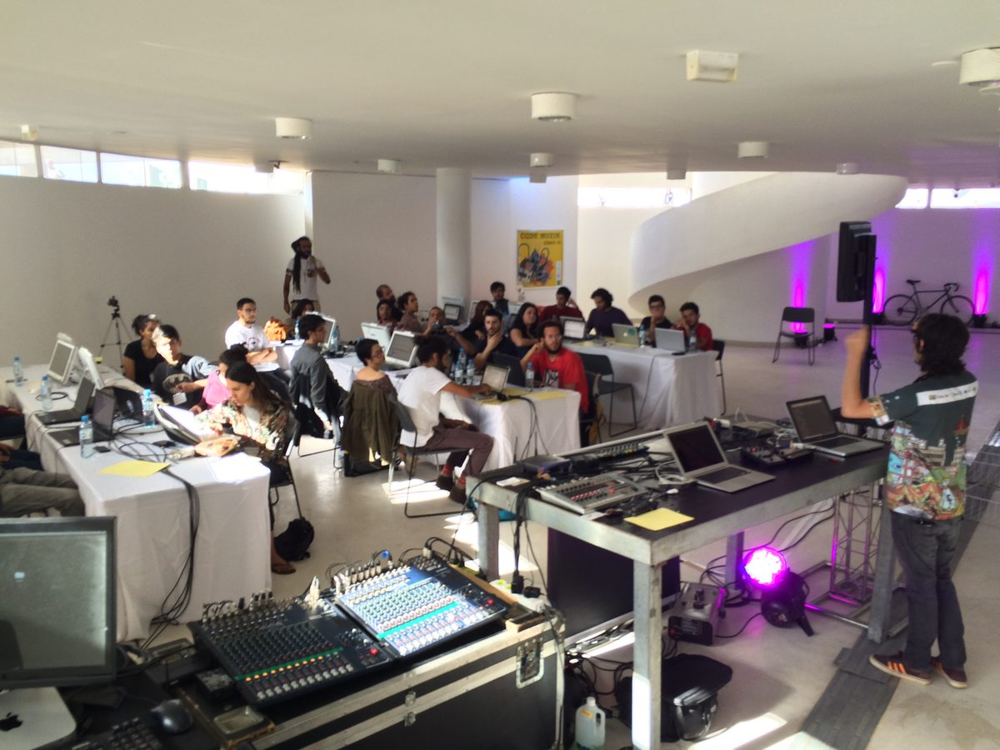

Software, projeção e sistemas interativosSoftware, projection and interactive systems
Uma seleção de obras e ferramentas de Alexandre Rangel e do Quase Cinema Lab, de 2006 até hoje. Em cada uma, escrita, código e imagem são pensados juntos: o software é parte da obra, não só o meio.A selection of works and tools by Alexandre Rangel and Quase Cinema Lab, from 2006 to today. In each one, writing, code and image are conceived together: the software is part of the work, not just the medium.
Software livreFree software · desde 2006since 2006
Quase-Cinema VJ software
Software livre de vídeo em tempo real para cinema ao vivo, VJing e performance audiovisual. A ferramenta que deu nome ao lab.Free real time video software for live cinema, VJing and audiovisual performance. The tool that gave the lab its name.
Instalação interativaInteractive installation · desde 2019since 2019
Esculturas Quânticas
Video mapping e sistema audiovisual interativo em que o corpo do público esculpe matéria virtual. Museu Nacional da República e FIESP.Video mapping and an interactive audiovisual system in which the audience's bodies sculpt virtual matter. Museu Nacional da República and FIESP.
Software interativo em que o público toca a cidade como uma partitura. Brasília Mapping Festival, Museu Nacional.Interactive software that lets the audience play the city like a musical score. Brasília Mapping Festival, Museu Nacional.
Arte e TecnologiaArt and Technology · desde 2024since 2024
Earth Affection
Obra colaborativa em Arte e Tecnologia que reúne projeção, corpo e imagem generativa.A collaborative Art and Technology work bringing together projection, body and generative imagery.
Tríptico audiovisual criado com inteligência artificial. Mostra Nacional de Criptoarte, CCBB.An audiovisual triptych made with artificial intelligence. Mostra Nacional de Criptoarte (National Cryptoart Show), CCBB.
Software interativo em homenagem aos Bichos de Lygia Clark. Museu Nacional.Interactive software paying tribute to Lygia Clark's Bichos. Museu Nacional.
Software interativo criado para a exposição SEUmuSEU, no Museu Nacional.Interactive software created for the SEUmuSEU exhibition at Museu Nacional.

Pesquisa e ensinoResearch and teaching
CODE MUZIK
Pesquisa e ensino de criação musical com programação: live coding, síntese e composição algorítmica.Research and teaching in music making through programming: live coding, synthesis and algorithmic composition.